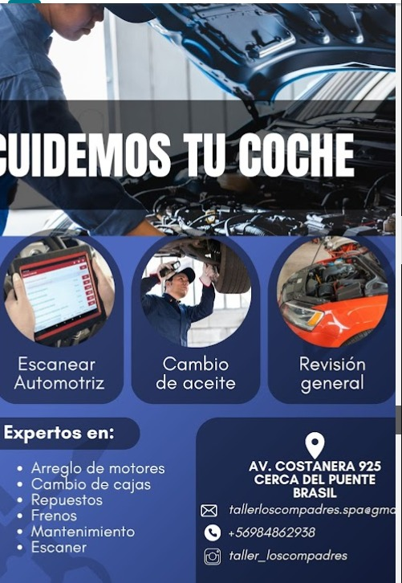
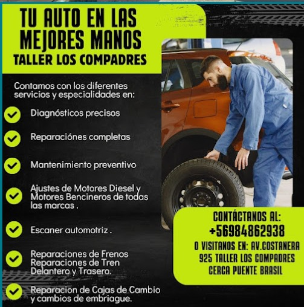

Scanner automotriz
Lectura de fallas, diagnóstico electrónico y orientación clara antes de reparar.
Taller mecánico en Vallenar
Diagnóstico automotriz, reparaciones completas y mantenimiento preventivo para que tu auto vuelva a la ruta con confianza.
Cuidemos tu coche
En Taller Los Compadres SPA revisamos tu vehículo con criterio técnico, herramientas de diagnóstico y una comunicación directa desde la primera evaluación.
Trabajamos en mantenciones, reparaciones mecánicas, frenos, cajas, embrague, tren delantero y soluciones para motores diesel o bencineros.
Servicios principales
Lectura de fallas, diagnóstico electrónico y orientación clara antes de reparar.
Ajustes, reparación y revisión mecánica para distintas marcas y usos.
Reparación de frenos, tren delantero y tren trasero con revisión de seguridad.
Reparación de cajas de cambio, embrague y componentes asociados.
Cambios de aceite, revisión general y mantención para evitar fallas mayores.
Apoyo en repuestos, reparaciones completas y seguimiento del trabajo realizado.
Método de trabajo
Escuchamos la falla, revisamos síntomas y definimos una evaluación inicial.
Aplicamos scanner, inspección visual y pruebas mecánicas según el caso.
Ejecutamos el trabajo acordado con foco en seguridad, orden y precisión.
Comentamos lo realizado y dejamos recomendaciones para el próximo mantenimiento.
Información del taller


Contacto y ubicación